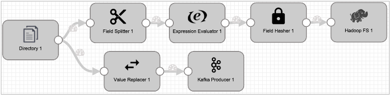
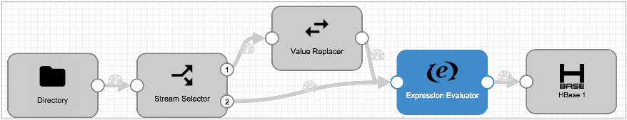

Designing the Data Flow
You can branch and merge streams in the pipeline.
Branching Streams
When you connect a stage to multiple stages, all data passes to all connected stages. You can configure required fields for a stage to discard records before they enter the stage, but by default all records are passed.
For example, in the following pipeline, all of the data from the Directory origin passes to both branches of the pipeline for different types of processing. But you might optionally configure required fields for the Field Splitter or Value Replacer to discard any records that are not needed.

To route data based on more complex conditions, use a Stream Selector.
Some stages generate events that pass to event streams. Event streams originate from an event-generating stage, such as an origin or destination, and pass from the stage through an event stream output, as follows:

For more information about the event framework and event streams, see Dataflow Triggers Overview.
Merging Streams
You can merge streams of data in a pipeline by connecting two or more stages to the same downstream stage. When you merge streams of data, Data Collector channels the data from all streams to the same stage, but does not perform a join of records in the stream.
For example, in the following pipeline, the Stream Selector stage sends data with null values to the Value Replacer stage:

The data from the Stream Selector default stream and all data from Value Replacer pass to Expression Evaluator for further processing, but in no particular order and with no record merging.
Note that you cannot merge event streams with data streams. Event records must stream from the event-generating stage to destinations or executors without merging with data streams. For more information about the event framework and event streams, see Dataflow Triggers Overview.